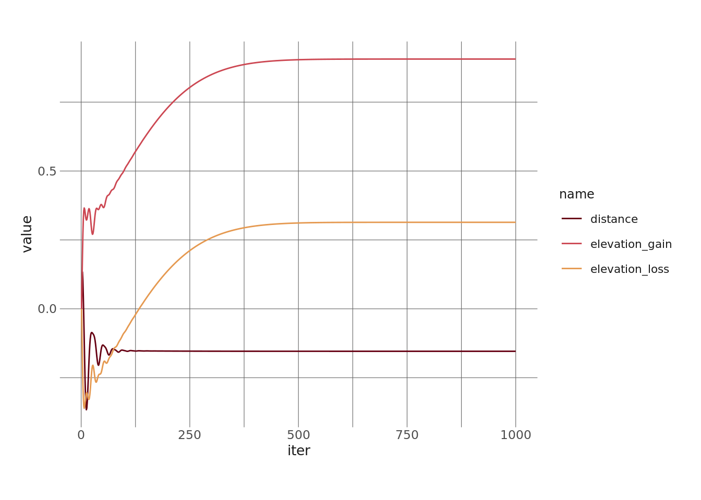

library(tidyverse)
library(eemisc) #for ggplot theme
library(harrypotter) #for colors
library(janitor)
library(torch)
herm <- harrypotter::hp(n = 1, option = "HermioneGranger")
opts <- options(
ggplot2.discrete.fill = list(
harrypotter::hp(n = 2, option = "HermioneGranger"),
harrypotter::hp(n = 3, option = "HermioneGranger"),
harrypotter::hp(n = 7, option = "Always")
)
)
theme_set(theme_ee())
ultra_rankings <- readr::read_csv('https://raw.githubusercontent.com/rfordatascience/tidytuesday/master/data/2021/2021-10-26/ultra_rankings.csv')
race <- readr::read_csv('https://raw.githubusercontent.com/rfordatascience/tidytuesday/master/data/2021/2021-10-26/race.csv')In this post, I want to play around with the {torch} package a little bit by fitting a multiple regression model “by hand” (sort of) using torch and the Adam optimizer.
A few warnings/disclaimers right up front:
- I’m using this post as a way to explore and learn how
{torch}works. I’m by no means an expert. I’m sure there are more concise/more idiomatic ways to do these things. And if you know about them, I’d love for you to show me! - I don’t think fitting a multiple regression (and particularly this multiple regression) through
{torch}is really worthwhile. But it felt like a way to dig into the package a little bit in a way that didn’t involve loading MNIST and following a canned tutorial. - There are lots of data cleaning/exploration steps I’m just flat out skipping here.
All of that said, if you’re still with me, let’s dive in.
Loading Data
For this project, I’m going to use some ultramarathon data from #TidyTuesday a few weeks ago. So the first step is loading that in and setting some plot options and whatnot.
Then, let’s take a little peeksie at the data. The first dataframe, ultra_rankings, provides data for each runner in each race.
glimpse(ultra_rankings)Rows: 137,803
Columns: 8
$ race_year_id <dbl> 68140, 68140, 68140, 68140, 68140, 68140, 68140, 68140…
$ rank <dbl> 1, 2, 3, 4, 5, 6, 7, 8, 9, 10, 11, 12, 13, NA, NA, NA,…
$ runner <chr> "VERHEUL Jasper", "MOULDING JON", "RICHARDSON Phill", …
$ time <chr> "26H 35M 25S", "27H 0M 29S", "28H 49M 7S", "30H 53M 37…
$ age <dbl> 30, 43, 38, 55, 48, 31, 55, 40, 47, 29, 48, 47, 52, 49…
$ gender <chr> "M", "M", "M", "W", "W", "M", "W", "W", "M", "M", "M",…
$ nationality <chr> "GBR", "GBR", "GBR", "GBR", "GBR", "GBR", "GBR", "GBR"…
$ time_in_seconds <dbl> 95725, 97229, 103747, 111217, 117981, 118000, 120601, …Let’s also peek at the race data, which provides data about races:
glimpse(race)Rows: 1,207
Columns: 13
$ race_year_id <dbl> 68140, 72496, 69855, 67856, 70469, 66887, 67851, 68241,…
$ event <chr> "Peak District Ultras", "UTMB®", "Grand Raid des Pyréné…
$ race <chr> "Millstone 100", "UTMB®", "Ultra Tour 160", "PERSENK UL…
$ city <chr> "Castleton", "Chamonix", "vielle-Aure", "Asenovgrad", "…
$ country <chr> "United Kingdom", "France", "France", "Bulgaria", "Turk…
$ date <date> 2021-09-03, 2021-08-27, 2021-08-20, 2021-08-20, 2021-0…
$ start_time <time> 19:00:00, 17:00:00, 05:00:00, 18:00:00, 18:00:00, 17:0…
$ participation <chr> "solo", "Solo", "solo", "solo", "solo", "solo", "solo",…
$ distance <dbl> 166.9, 170.7, 167.0, 164.0, 159.9, 159.9, 163.8, 163.9,…
$ elevation_gain <dbl> 4520, 9930, 9980, 7490, 100, 9850, 5460, 4630, 6410, 31…
$ elevation_loss <dbl> -4520, -9930, -9980, -7500, -100, -9850, -5460, -4660, …
$ aid_stations <dbl> 10, 11, 13, 13, 12, 15, 5, 8, 13, 23, 13, 5, 12, 15, 0,…
$ participants <dbl> 150, 2300, 600, 150, 0, 300, 0, 200, 120, 100, 300, 50,…Exploring Data
Again, I’m skipping this, but you should definitely do some exploration before building a model. :)
Modeling with Torch
So, the idea here is to use {torch} to “manually” (sort of) estimate a multiple linear regression model. The first thing I’m going to do is refine a dataframe to use in the model. There are lots of possibilities here, but I’m going to choose to estimate model that predicts the winning time of a race from the race distance, the total elevation gain, and the total elevation loss. So let’s and filter our data down to what we’ll actually use in our model.
ultra_mod_df <- ultra_rankings %>%
left_join(race, by = "race_year_id") %>%
filter(rank == 1) %>%
select(time_in_seconds, distance, elevation_gain, elevation_loss)Next, I’m going to drop any observations with missing values on any of these variables. I’m also going to normalize the variables, because my understanding is that this matters quite a bit for optimizing via gradient descent (and it’s also good practice for linear models in general).
ultra_normed <- ultra_mod_df %>%
drop_na() %>%
mutate(across(1:4, function(x) {(mean(x) - x)/sd(x)}))Creating a Dataset
Right, so, now we can get into the torch-y stuff. The first step is to use the dataset() constructor to build a dataset. According to the torch documentation, this requires following a few conventions. More specifically, we need to establish an initialize() function, a .getitem() function, and a .length() function.
Basically, these do the following:
initialize()creates x (predictor) and y (outcome) tensors from the data;.getitem()provides a way to return the x and y values for an item when provided an index (or multiple indices) by the user;.length()tells us how many observations we have in the data
We can also define helper functions within dataset() as well (e.g. preprocessors for our data). I’m not going to do that here (since we’ve already lightly preprocessed our data), but I could if I wanted.
#initializing dataset
ultra_dataset <- dataset(
name = "ultra_dataset",
initialize = function(df) {
self$x <- df %>%
select(-time_in_seconds) %>%
as.matrix() %>%
torch_tensor()
self$y <- torch_tensor(df$time_in_seconds)
},
.getitem = function(i) {
x <- self$x[i, ]
y <- self$y[i]
list(x, y)
},
.length = function() {
self$y$size()[[1]]
}
)Let’s see what this looks like. We’ll create a tensor dataset from the full ultra_normed data and then return its length:
ultra_tensor_df <- ultra_dataset(ultra_normed)
ultra_len <- ultra_tensor_df$.length()
#note that this is the same as: length(ultra_tensor_df)
ultra_len[1] 1237We can also pull out a single observation if we want, and the result will give us the values in the X tensor and the y tensor:
ultra_tensor_df$.getitem(1)[[1]]
torch_tensor
-0.3624
0.2811
-0.2866
[ CPUFloatType{3} ]
[[2]]
torch_tensor
-0.809365
[ CPUFloatType{} ]#note that 1 here refers to the index of the itemNext, let’s make train and validation datasets.
set.seed(0408)
train_ids <- sample(1:ultra_len, floor(.8*ultra_len))
valid_ids <- setdiff(1:ultra_len, train_ids)
trn <- ultra_dataset(ultra_normed[train_ids, ])
vld <- ultra_dataset(ultra_normed[valid_ids, ])This would be the point where we could also define a dataloader to train on batches of the data, but I’m not going to do that here because we can just train on the entire dataset at once.
Defining a Model
Now, let’s define our model. Again, for our learning purposes today, this is just going to be a plain old multiple regression model. To implement this in {torch}, we can define the model as follows:
lin_mod <- function(x, w, b) {
torch_mm(w, x) + b
}In this model, we’re taking a vector of weights (or slopes), w, multiplying it by our input matrix, x, and adding our bias (or intercept). The torch_mm() function lets us perform this matrix multiplication.
Now that we’ve defined this model, let’s create our w and b parameters. Since this is a linear regression, each predictor in our model will have a single weight associated with it, and we’ll have a single intercept for the model. We’ll just use 1 as the starting value for our w parameters and 0 as the starting value for our b parameter.
#defining parameters
num_feats <- 3
w <- torch_ones(c(1, num_feats))
b <- torch_zeros(1)Now we can do a quick test to make sure everything fits together. We’re not actually training our model at this point, but I want to just run a small sample of our training data through the model (with the parameter starting values) to make sure we don’t get any errors.
Note that I need to transpose the X matrix for the multiplication to work.
aa <- trn$.getitem(1:10)
aa_x <- torch_transpose(aa[[1]], 1, 2)
t_out <- lin_mod(aa_x, w, b)
t_outtorch_tensor
-0.2315 -0.4256 -0.7237 -0.2182 -0.2279 -0.2015 -0.2869 -0.2124 -0.5832 -0.2300
[ CPUFloatType{1,10} ]Great! This gives us a single output for each of our input observations, which is what we want.
Training the Model
Now that we have a model and can feed data into the model, let’s train it.
Training the model involves using gradient descent, an optimizer, a loss function, and backpropagation to slowly tweak our parameters until they reach their optimal values (i.e. those that minimize loss). I’m not going to do a super deep dive into what all of that means, but basically in our training loop we’re going to:
- Run the data through the model and get predictions;
- Measure how good our predictions are (via the loss function);
- Compute the gradient of the loss with respect to the parameters (via the
backward()method); - Tell our optimizer to update the parameters (via
optimizer$step()); - Repeat a bunch of times
That’s basically what the code below does. A few little extra things to point out, thought:
- In addition to training the model on the training data, I’m also getting predictions on the validation data during each iteration of the training process. This won’t influence the training at all, but it’ll give us a look at how the model does on a holdout set of data throughout the entire process.
- The
torch_squeeze()function just removes an unnecessary dimension from the predictions tensors. - I’ve also created lists to track training loss, validation loss, and parameter values throughout the fitting, and these get recorded on each pass through the training loop.
#recreate our parameters with the requires_grad attribute
w <- torch_zeros(c(1, num_feats), requires_grad = TRUE)
b <- torch_zeros(1, requires_grad = TRUE)
#put the parameters in a list
params <- list(w, b)
#define our optimizer
optimizer <- optim_adam(params, lr = .1)
#create lists to track values during the training
loss_tracking <- list()
params_tracking <- list()
vld_loss_tracking <- list()
#training loop
for (i in 1:1000) {
optimizer$zero_grad()
x <- torch_transpose(trn$x, 1, 2)
vld_x <- torch_transpose(vld$x, 1, 2)
preds <- lin_mod(x, w, b)
vld_preds <- lin_mod(vld_x, w, b)
preds <- torch_squeeze(preds)
vld_preds <- torch_squeeze(vld_preds)
current_loss <- nnf_mse_loss(preds, trn$y)
vld_loss <- nnf_mse_loss(vld_preds, vld$y)
loss_tracking[i] <- current_loss$item()
vld_loss_tracking[i] <- vld_loss$item()
params_tracking[i] <- list(c(as.numeric(params[[1]]), as.numeric(params[[2]])))
current_loss$backward()
optimizer$step()
}Investigating our Results
Cool stuff – our model has finished training now. Let’s take a look at our final parameter values. In a little while, we’ll also compare these to values we get from fitting a multiple regression using the lm() function.
betas <- tibble(
term = c(names(ultra_normed)[2:4], "intercept"),
size = params_tracking[[1000]]
)
betas# A tibble: 4 × 2
term size
<chr> <dbl>
1 distance -0.154
2 elevation_gain 0.906
3 elevation_loss 0.314
4 intercept 0.0144Next, let’s take a look at how the parameter values (minus the intercept) change throughout the training loop/fitting process.
descent_tibble <- function(i, inp) {
tibble(
iter = i,
distance = inp[[i]][1],
elevation_gain = inp[[i]][2],
elevation_loss = inp[[i]][3]
)
}
params_fitting_tbl <- map_dfr(1:1000, ~descent_tibble(.x, params_tracking)) %>%
pivot_longer(cols = -iter)
params_fitting_tbl %>%
ggplot(aes(x = iter, y = value, color = name)) +
geom_line() +
scale_color_hp_d(option = "HermioneGranger")
We probably could have trained for fewer iterations, but it’s a small dataset and a simple model, so whatever.
Now, let’s see what the coefficients of a “standard” multiple regression (fit using lm()) look like. This will serve as our “ground truth” and will tell us if our gradient descent fitting process arrived at the “right” coefficient values:
mod_res <- lm(time_in_seconds ~ distance + elevation_gain + elevation_loss, data = ultra_normed[train_ids, ])
mod_res
Call:
lm(formula = time_in_seconds ~ distance + elevation_gain + elevation_loss,
data = ultra_normed[train_ids, ])
Coefficients:
(Intercept) distance elevation_gain elevation_loss
0.01438 -0.15403 0.90636 0.31391 Good stuff! If we look back up at the coefficients from our torch model, we can see that they’re (nearly) identical to those from this lm() model – which is what we want.
As a final step, let’s look at the loss of the model throughout the training process on both the training set and the validation set. This will give us a sense of how our model “learns” throughout the process.
As sort of an aside – we’d typically look at these metrics as a way to examine overfitting, which is a big problem for neural networks and more complex models. However, we’re not running a complex model. Linear models pretty much can’t overfit, so this is a less useful diagnostic here. But let’s take a look anyway.
#checking out loss during training
loss_metrics <- tibble(
iter = 1:1000,
trn_loss = unlist(loss_tracking),
vld_loss = unlist(vld_loss_tracking)
) %>%
pivot_longer(
cols = -iter
)
loss_metrics %>%
ggplot(aes(x = iter, y = value, color = name)) +
geom_line() +
scale_color_hp_d(option = "HermioneGranger")Right, so this is pretty much what we’d expect. Both losses drop in the first few iterations and then level off. The fact that both losses flatline indicates that we’re not overfitting, which again is what we expect with a linear model. We also expect our validation loss to be higher than the training loss, because the model hasn’t seen this data ever.
Conclusion
That’s it for now. We’ve learned how to write a ton of code to accomplish something we can do in a single-liner call to lm() :)
I’m planning on digging into {torch} more and potentially writing a few more blogs once I get into actual neural networks with image and/or text data, but that’s for another day.
Reuse
Citation
BibTeX citation:
@online{ekholm2021,
author = {Ekholm, Eric},
title = {Fitting a {Multiple} {Regression} with {Torch}},
date = {2021-11-20},
url = {https://www.ericekholm.com/posts/fitting-a-multiple-regression-with-torch},
langid = {en}
}
For attribution, please cite this work as:
Ekholm, Eric. 2021. “Fitting a Multiple Regression with
Torch.” November 20, 2021. https://www.ericekholm.com/posts/fitting-a-multiple-regression-with-torch.